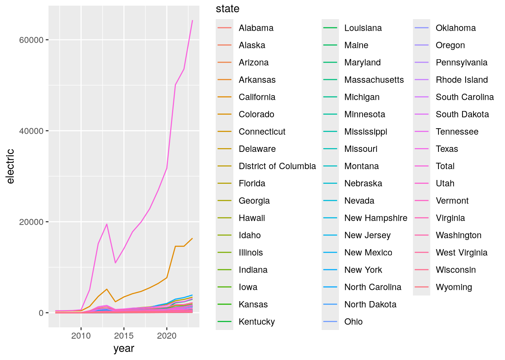
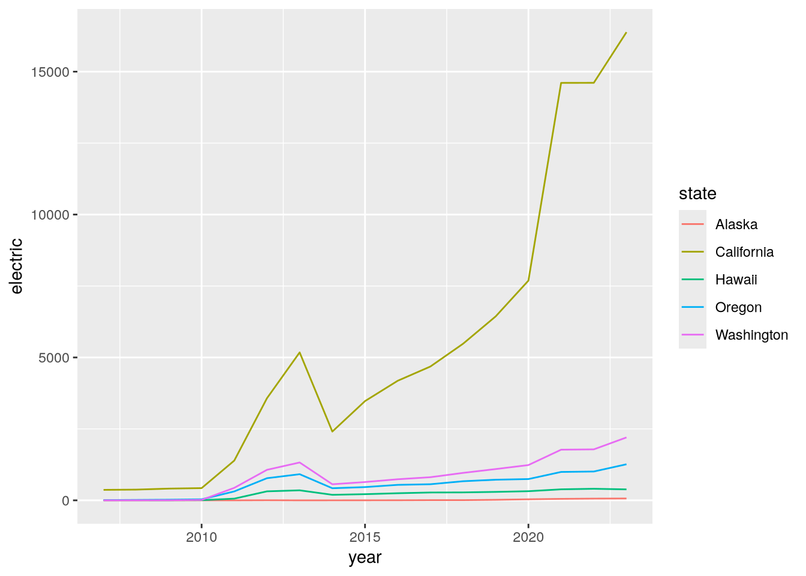

flowchart LR
start(Start) --> condition{Is condition true?}
condition -- True --> do_something[Do something]
condition -- False --> do_something_else["Do something else"]
do_something --> done(End)
do_something_else --> done
26 Control Flow
NoteLearning Goals
After this lesson, you should be able to:
- Create code that only runs when a condition is satisfied
- Identify when a problem requires iteration
- Select appropriate iteration strategies for problems
- Explain what a map (or apply) function does
- Call a function repeatedly with the purrr package’s map functions
ImportantRequired Packages
This chapter uses the following packages:
- dplyr
- ggplot2
- purrr
- readxl
- stringr
Chapter 14 explains how to install and load packages.
Suppose you want to read and clean 10 different mass measurement datasets. All of the datasets have the same structure, so the code to read and clean them is the same. Based on what you learned in Chapter 25, you decide to write a function, read_mass_data, and reuse the code. But you realize there are still two problems:
- When you collected the 8th dataset, you forgot to tare the scale. As a result, all of the measurements are 50 grams too high. This is easy to correct by subtracting 50, but only the 8th dataset needs this correction. You need a way to choose which code to run based on a condition.
- You still have to write 10 calls to
read_mass_data. Using a programming language is supposed to help you avoid tedious things like this, and this wouldn’t scale well if you needed to read 100 or 1,000 datasets. You need a way to run code multiple times.
Both of these problems are related to the order in which code runs (the flow of control). R provides several control flow expressions that change how code runs. You can use control flow expressions to choose which code to run based on a condition or to run code multiple times. Many of the concepts in this chapter generalize to other programming languages, which provide similar commands to alter control flow.
26.1 Conditional Expressions
A conditional expression is one where the computer must make a decision about which code to run next. The computer makes its decision by checking whether a condition is true. In a flowchart, a conditional looks like a branch (two or more ways to get somewhere):
In most programming languages, the keyword if (or some variation of this) creates a conditional. Because of this, conditionals are also called if statements. In R, the syntax for a conditional is:
if (condition) {
# This code runs if the condition is TRUE.
} else {
# This code runs if the condition is FALSE.
}The condition must return a single TRUE or FALSE value. The else part of the conditional is optional, so if you only want to do something in the true case, you can just write:
if (condition) {
# This code runs if the condition is TRUE.
}You can test multiple conditions by replacing the curly braces { } after else with another conditional:
if (condition1) {
# This code runs if condition1 is TRUE.
} else if (condition2) {
# This code runs if condition2 is TRUE (and condition1 is FALSE).
} else {
# This code runs if both condition1 and condition2 are FALSE.
}As an example, suppose we want our code to produce a different greeting depending on the hour:
- If it’s the morning (hours 6-11), the code should produce
"Good morning!". - If it’s the afternoon (hours 12-17), the code should produce
"Good afternoon!". - For any other hour, the code should produce
"Hello.".
We can use a conditional to do this (see Section 15.4 if you need a refresher on how to write conditions that return TRUE and FALSE values):
hour = 10
if (hour >= 6 && hour <= 11) {
greeting = "Good morning!"
} else if (hour >= 12 && hour <= 17) {
greeting = "Good afternoon!"
} else {
greeting = "Hello."
}
greeting[1] "Good morning!"Notice how changing the value of hour changes the result:
hour = 13
if (hour >= 6 && hour <= 11) {
greeting = "Good morning!"
} else if (hour >= 12 && hour <= 17) {
greeting = "Good afternoon!"
} else {
greeting = "Hello."
}
greeting[1] "Good afternoon!"Try out a few values for hour yourself. Then try modifying the code to give another greeting, "Good evening!" if it’s the evening (hours 18-19).
Note
In R, conditionals automatically return the value on the last line that runs (similar to functions). So another way to write the greeter example above is:
hour = 13
greeting = if (hour >= 6 && hour <= 11) {
"Good morning!"
} else if (hour >= 12 && hour <= 17) {
"Good afternoon!"
} else {
"Hello."
}
greeting[1] "Good afternoon!"
Note
You can nest one conditional inside the curly braces of another. Nesting is useful when you want to check a condition, do some computations, and then check another condition under the assumption that the first condition was TRUE.
Warning
Conditionals correspond to special cases in your code. Having lots of special cases can make code harder to understand and maintain.
It’s not bad to use conditionals, but be mindful of how you use them. Think about whether there’s a more general way to do things instead. Be especially wary of nested conditionals.
26.2 Case Study: U.S. Alternative Fueling Stations, Part II
Let’s continue the U.S. Alternative Fueling Stations case study from Section 25.5. In the previous part, we wrote a function, read_fuel_sheet, to read and clean sheets from the dataset Excel file:
library("dplyr")
library("readxl")
library("stringr")
read_fuel_sheet = function(path, year) {
sheet = as.character(year)
stations = read_excel(path, sheet = sheet, skip = 1)
# Clean up the column names.
names = names(stations)
is_dot_name = str_starts(names, fixed("..."))
names[is_dot_name] = as.character(stations[2, is_dot_name])
names = str_to_lower(names)
names(stations) = names
# Remove blank rows.
stations = filter(stations, !is.na(biodiesel))
# Correct column types and add year column.
stations$electric = as.numeric(stations$electric)
# TODO: hydrogen, propane
stations$year = year
stations
}We designed the function around the 2007 data sheet, but the format of the sheets changed in 2014. So the read_fuel_sheet function emits an error for 2014 and later. Let’s edit the function so that it works well for every year. We can use conditionals for code that should only run for some of the years.
To get started, let’s write code to read and clean the data for 2023, since it’s the last year. We can use the code in read_fuel_sheet as a reference. We’ll still use the readxl package’s read_excel function to read the sheet:
path = "data/2007-2023_us_alt_fuels.xlsx"
stations = read_excel(path, sheet = "2023", skip = 1)
head(stations)# A tibble: 6 × 10
State Biodiesel CNG E85 Electrica Hydrogenb LNG Propanec
<chr> <dbl> <dbl> <dbl> <chr> <chr> <dbl> <chr>
1 <NA> NA NA NA (stations / charging o… (retail … NA (primar…
2 <NA> NA NA NA Level 1 / Level 2 / DC… <NA> NA <NA>
3 Alabama 9 28 34 424 | 1,096 0 | 0 | 0 2 25 | 36…
4 <NA> NA NA NA 35 | 704 | 357 <NA> NA <NA>
5 Alaska 0 0 0 65 | 124 0 | 0 | 0 0 1 | 0 |…
6 <NA> NA NA NA 3 | 87 | 34 <NA> NA <NA>
# ℹ 2 more variables: `Renewable Diesel` <dbl>, Totald <dbl>This immediately reveals one reason why the read_fuel_sheet function didn’t work. For 2014 and later, all of the column names are in the 2nd row of the sheet. There’s no need to get names from other rows. Let’s make a note of this in a comment.
We still need to convert the column names to lowercase:
names = names(stations)
# For 2014 and later, no need to get column names from two different rows.
names = str_to_lower(names)One of the columns is named renewable diesel, which will be difficult to use in analysis because it contains a space. We can use stringr’s str_replace_all to replace the space with an underscore:
names = str_replace_all(names, fixed(" "), "_")
names [1] "state" "biodiesel" "cng" "e85"
[5] "electrica" "hydrogenb" "lng" "propanec"
[9] "renewable_diesel" "totald" Four of the names seem incorrect: electrica, hydrogenb, propanec, and totald. If we examine the dataset with spreadsheet software, we can see that these column names have alphabetic superscripts in 2014 and later. There are many ways to fix this, but we’ll use dplyr’s rename function:
names(stations) = names
# For 2014 and later:
stations = rename(
stations,
electric = electrica,
hydrogen = hydrogenb,
propane = propanec,
total = totald
)
head(stations)# A tibble: 6 × 10
state biodiesel cng e85 electric hydrogen lng propane renewable_diesel
<chr> <dbl> <dbl> <dbl> <chr> <chr> <dbl> <chr> <dbl>
1 <NA> NA NA NA (statio… (retail… NA (prima… NA
2 <NA> NA NA NA Level 1… <NA> NA <NA> NA
3 Alabama 9 28 34 424 | 1… 0 | 0 |… 2 25 | 3… 0
4 <NA> NA NA NA 35 | 70… <NA> NA <NA> NA
5 Alaska 0 0 0 65 | 124 0 | 0 |… 0 1 | 0 … 0
6 <NA> NA NA NA 3 | 87 … <NA> NA <NA> NA
# ℹ 1 more variable: total <dbl>The next step in read_fuel_sheet is to remove blank rows (rows with missing values). The 2023 data frame has rows that are partially blank, but they do have values in the electric column. By inspecting the sheet, we can see that for 2014 and later, the electric column contains multiple values separated by the pipe character |. The electric values for each state are also split across two rows. Since we want to compare the data over time, we only need the station count, which is in the first row. So we’ll use the code from read_fuel_sheet that filters out the blank rows:
stations = filter(stations, !is.na(biodiesel))
head(stations)# A tibble: 6 × 10
state biodiesel cng e85 electric hydrogen lng propane renewable_diesel
<chr> <dbl> <dbl> <dbl> <chr> <chr> <dbl> <chr> <dbl>
1 Alabama 9 28 34 424 | 1… 0 | 0 |… 2 25 | 3… 0
2 Alaska 0 0 0 65 | 124 0 | 0 |… 0 1 | 0 … 0
3 Arizona 77 26 21 1,198 |… 0 | 0 |… 5 42 | 3… 0
4 Arkans… 34 14 74 334 | 8… 0 | 0 |… 0 17 | 1… 0
5 Califo… 48 292 369 16,381 … 57 | 7 … 39 136 | … 597
6 Colora… 5 25 95 2,165 |… 0 | 1 |… 1 28 | 2… 0
# ℹ 1 more variable: total <dbl>With that done, let’s split the electric column into two columns, since it contains two values. The first value is the number of stations, which we’ll keep in the electric column. The second value is the number of outlets, which we’ll put in a column called electric_outlets. To make it easier to convert the columns to numbers, we’ll remove all of the commas (,) with stringr’s str_replace_all function. Then we can use stringr’s str_split_fixed function to split the column in two. Finally, we can use as.numeric to convert the columns to numbers before saving them back into the data frame:
# For 2014 and later:
electric = str_replace_all(stations$electric, fixed(","), "")
electric = str_split_fixed(electric, fixed(" | "), 2)
stations$electric = as.numeric(electric[, 1])
stations$electric_outlets = as.numeric(electric[, 2])The hydrogen and propane columns have the same problem. We’ll skip fixing them, since the code to do so is almost identical.
The 2023 data frame is now clean enough for analysis. The code to read and clean it is:
stations = read_excel(path, sheet = "2023", skip = 1)
names = names(stations)
# For 2014 and later, no need to get column names from two different rows.
names = str_to_lower(names)
names = str_replace_all(names, fixed(" "), "_")
names(stations) = names
# For 2014 and later:
stations = rename(
stations,
electric = electrica,
hydrogen = hydrogenb,
propane = propanec,
total = totald
)
stations = filter(stations, !is.na(biodiesel))
# For 2014 and later:
electric = str_replace_all(stations$electric, fixed(","), "")
electric = str_split_fixed(electric, fixed(" | "), 2)
stations$electric = as.numeric(electric[, 1])
stations$electric_outlets = as.numeric(electric[, 2])We can use conditionals to combine this with code in the body of the read_fuel_sheet function. Specifically, we need to check year < 2014 or year >= 2014 at a few points. One way to write the code for the combined function is:
read_fuel_sheet = function(path, year) {
sheet = as.character(year)
stations = read_excel(path, sheet = sheet, skip = 1)
# Clean up the column names.
names = names(stations)
if (year < 2014) {
is_dot_name = str_starts(names, fixed("..."))
names[is_dot_name] = as.character(stations[2, is_dot_name])
}
names = str_to_lower(names)
names = str_replace_all(names, fixed(" "), "_")
names(stations) = names
if (year >= 2014) {
stations = rename(
stations,
electric = electrica,
hydrogen = hydrogenb,
propane = propanec,
total = totald
)
}
# Remove blank rows.
stations = filter(stations, !is.na(biodiesel))
# Correct column types and add year column.
if (year >= 2014) {
electric = str_replace_all(stations$electric, fixed(","), "")
electric = str_split_fixed(electric, fixed(" | "), 2)
stations$electric = as.numeric(electric[, 1])
stations$electric_outlets = as.numeric(electric[, 2])
# TODO: hydrogen, propane
}
stations$electric = as.numeric(stations$electric)
# TODO: hydrogen, propane
stations$year = year
stations
}Notice how using multiple conditionals makes it harder to understand what the function does. We could instead use one conditional, but we’d have to repeat parts of the code that are the same. Alternatively, we could move some of the cleaning steps to other functions, so that read_fuel_sheet is shorter and easier to understand (without changing what it does).
Let’s test the new read_fuel_sheet function on the 2023 data:
read_fuel_sheet(path, 2023)# A tibble: 52 × 12
state biodiesel cng e85 electric hydrogen lng propane renewable_diesel
<chr> <dbl> <dbl> <dbl> <dbl> <chr> <dbl> <chr> <dbl>
1 Alaba… 9 28 34 424 0 | 0 |… 2 25 | 3… 0
2 Alaska 0 0 0 65 0 | 0 |… 0 1 | 0 … 0
3 Arizo… 77 26 21 1198 0 | 0 |… 5 42 | 3… 0
4 Arkan… 34 14 74 334 0 | 0 |… 0 17 | 1… 0
5 Calif… 48 292 369 16381 57 | 7 … 39 136 | … 597
6 Color… 5 25 95 2165 0 | 1 |… 1 28 | 2… 0
7 Conne… 1 13 3 865 0 | 0 |… 0 5 | 15… 0
8 Delaw… 0 3 2 197 0 | 1 |… 0 7 | 12… 0
9 Distr… 9 2 4 369 0 | 0 |… 0 0 | 6 … 0
10 Flori… 5 64 150 3430 0 | 0 |… 3 74 | 5… 0
# ℹ 42 more rows
# ℹ 3 more variables: total <dbl>, electric_outlets <dbl>, year <dbl>We should also make sure that it still returns the same result for the 2007 data:
read_fuel_sheet(path, 2007)New names:
• `` -> `...5`
• `` -> `...6`
• `` -> `...8`# A tibble: 52 × 10
state biodiesel cng e85 electric hydrogen lng propane total year
<chr> <dbl> <dbl> <dbl> <dbl> <chr> <dbl> <chr> <dbl> <dbl>
1 Alabama 13 3 3 0 0 0 52 71 2007
2 Alaska 0 1 0 0 0 0 10 11 2007
3 Arizona 10 37 13 12 1 3 58 134 2007
4 Arkansas 3 3 4 0 0 0 41 51 2007
5 California 39 186 6 367 23 29 206 856 2007
6 Colorado 30 21 45 2 0 0 59 157 2007
7 Connecticut 1 10 2 3 0 0 16 32 2007
8 Delaware 3 1 1 0 0 0 3 8 2007
9 District o… 1 1 3 0 1 0 0 6 2007
10 Florida 14 17 11 2 1 0 49 94 2007
# ℹ 42 more rowsThis looks good. We’ve now got a function that can read any of the years. In part III of this case study (Section 26.7), we’ll see how to use the function to read all of them.
26.3 Loops
Computers are great at iterative tasks, where some of the steps need to be repeated. Examples of tasks like this include:
- Applying a transformation to (each element of) an entire column of data.
- Computing distances between all pairs for a set of points.
- Reading a collection of files in order to combine and analyze their data.
- Simulating how a complex system evolves from one time step to the next.
- Scraping the pages of a website.
Each run of a repeated step is called an iteration. So in the example about reading a collection of files, one iteration means reading one file.
In programming languages, we use control flow expressions called loops to make the computer repeat some code. There are many different kinds of loops, but in a flowchart, they always look like a path that begins and ends at the same place (hence the name “loop”):
flowchart LR
start(Start) --> condition{Is condition true?}
condition -- True --> body[Do something]
body --> condition
condition -- False ----> done(End)
In R, there are four distinct categories of loops:
- Vectorization, where a function is implicitly called on each element of a vector.
- Map functions (& apply functions), where a function is explicitly called on each element of a data structure.
- For loops (& while loops), where an expression is evaluated repeatedly until some condition is met.
- Recursion, where a function calls itself.
We introduced vectorization in Section 13.1.3, several chapters ago. The next section, Section 26.4, introduces the purrr package and map functions. Section 26.5 introduces for loops. In Section 26.6, we’ll describe how to write loops to solve iterative problems and how to decide which kind of loop to use.
Note
We don’t cover recursion because it tends to be difficult for people to understand. Recursion is also the least efficient kind of loop in R.
26.4 The purrr Package
Section 13.1.3 introduced vectorization, a convenient and efficient way to compute multiple results. That section also mentioned that some of R’s functions—the ones that summarize or aggregate data—are not vectorized.
The class function is an example of a function that’s not vectorized. If we call the class function on the least terns dataset, we get just one result for the dataset as a whole:
class(terns)[1] "data.frame"We can get the class of a single column by selecting the column with $, the dollar sign operator:
class(terns$year)[1] "integer"What if we want the classes of all the columns? We could write a call to class for each column, but that would be tedious. When you’re working with a programming language, you should try to avoid tedium; there’s usually a better, more automated way.
Data frames are technically lists (Section 13.2.1), where each column is one element. With that in mind, what we need here is a line of code that calls class on each element of the data frame. The idea is similar to vectorization, but since we have a list and a non-vectorized function, we have to do a bit more than just call class(terns).
The purrr package is a collection of functions to help you do things repeatedly or for each element of a data structure. Install and load the package in order to follow along:
# install.packages("purrr")
library("purrr")The package’s map function calls a function on each element of a vector, list, or other data structure. We say it maps or applies a function over the elements. In a flowchart, the map function looks like this:
flowchart LR
start(Start) --> condition{Are there more elements?}
condition -- Yes --> get_elt["Get the next element"]
get_elt --> body[Do something]
body --> condition
condition -- No ----> done(End)
The syntax of the map function is:
map(data, fun, ...)The map function calls the function fun once for each element of data. It passes the element to fun as the first argument. It also passes the ... arguments to fun, which are constant across all of the calls.
Let’s try this out with the least terns data and the class function:
map(terns, class)$year
[1] "integer"
$site_name
[1] "character"
$site_name_2013_2018
[1] "character"
$site_name_1988_2001
[1] "character"
$site_abbr
[1] "character"
$region_3
[1] "character"
$region_4
[1] "character"
$event
[1] "character"
$bp_min
[1] "numeric"
$bp_max
[1] "numeric"
$fl_min
[1] "integer"
$fl_max
[1] "integer"
$total_nests
[1] "integer"
$nonpred_eggs
[1] "integer"
$nonpred_chicks
[1] "integer"
$nonpred_fl
[1] "integer"
$nonpred_ad
[1] "integer"
$pred_control
[1] "character"
$pred_eggs
[1] "integer"
$pred_chicks
[1] "integer"
$pred_fl
[1] "integer"
$pred_ad
[1] "integer"
$pred_pefa
[1] "character"
$pred_coy_fox
[1] "character"
$pred_meso
[1] "character"
$pred_owlspp
[1] "character"
$pred_corvid
[1] "character"
$pred_other_raptor
[1] "character"
$pred_other_avian
[1] "character"
$pred_misc
[1] "character"
$total_pefa
[1] "integer"
$total_coy_fox
[1] "integer"
$total_meso
[1] "integer"
$total_owlspp
[1] "integer"
$total_corvid
[1] "integer"
$total_other_raptor
[1] "integer"
$total_other_avian
[1] "integer"
$total_misc
[1] "integer"
$first_observed
[1] "character"
$last_observed
[1] "character"
$first_nest
[1] "character"
$first_chick
[1] "character"
$first_fledge
[1] "character"The result is similar to if the class function was vectorized. In fact, if we use a vector and a vectorized function with map, the result is nearly identical to the result from vectorization:
x = c(1, 2, pi)
sin(x)[1] 8.414710e-01 9.092974e-01 1.224647e-16map(x, sin)[[1]]
[1] 0.841471
[[2]]
[1] 0.9092974
[[3]]
[1] 1.224647e-16The only difference is that the result from map is a list. In fact, the map function always returns a list with one element for each element of the input data.
Tip
If you want to use map to repeat arbitrary code rather than a specific function, you can use \() or the function keyword to create an anonymous function (one that isn’t assigned to a variable). Then the syntax of the map function is:
map(data, \(element) {
# This code runs once for each element in data.
})
NoteNote: Apply Functions
R’s apply functions are a built-in equivalent to map functions. The lapply, sapply, and tapply functions are the three most important functions in the family of apply functions, but there are many more. The lapply function is nearly identical to the map function.
We focus on and recommend the map functions rather than the apply functions because they are more consistent in their syntax and specific in their return types. You can learn more about R’s apply functions by reading this StackOverflow post.
26.4.1 Other Map Functions
The purrr package provides many different map functions, all of which have names that start with map. All of them call another function on each element of a data structure. They also all have the same syntax. Where they differ is in how they return results. A few of these are shown in Table 26.1.
| Function | Return Type |
|---|---|
map_lgl |
logical |
map_int |
integer |
map_dbl |
numeric (double) |
map_chr |
character |
map |
list |
Let’s look at some examples of the other map functions. If we use map_chr to find the classes of the columns in the least terns data, we get a character vector:
map_chr(terns, class) year site_name site_name_2013_2018 site_name_1988_2001
"integer" "character" "character" "character"
site_abbr region_3 region_4 event
"character" "character" "character" "character"
bp_min bp_max fl_min fl_max
"numeric" "numeric" "integer" "integer"
total_nests nonpred_eggs nonpred_chicks nonpred_fl
"integer" "integer" "integer" "integer"
nonpred_ad pred_control pred_eggs pred_chicks
"integer" "character" "integer" "integer"
pred_fl pred_ad pred_pefa pred_coy_fox
"integer" "integer" "character" "character"
pred_meso pred_owlspp pred_corvid pred_other_raptor
"character" "character" "character" "character"
pred_other_avian pred_misc total_pefa total_coy_fox
"character" "character" "integer" "integer"
total_meso total_owlspp total_corvid total_other_raptor
"integer" "integer" "integer" "integer"
total_other_avian total_misc first_observed last_observed
"integer" "integer" "character" "character"
first_nest first_chick first_fledge
"character" "character" "character" Likewise, if we use map_dbl to compute the sin values, we get a numeric vector, the same as from vectorization:
map_dbl(x, sin)[1] 8.414710e-01 9.092974e-01 1.224647e-16In spite of that, vectorization is still more efficient than sapply, so use vectorization instead when possible.
The purrr documentation provides more details about how to use the many functions in the package.
26.5 For Loops
A for loop runs the code in its body once for each element of a data structure. Figure 26.3 shows what for loop looks like in a flowchart.
In most programming languages, the keyword for creates a for loop. In R, the syntax of a for loop is:
for (element in data) {
# This code runs once for each element in data.
}The loop automatically assigns the next element of data to the variable element at the beginning of each iteration. The loop iterates once for each element, unless a keyword causes the loop to end early.
Tip
For loops and map functions do almost the same thing. Here’s how the for loop syntax above translates into a map function:
map(data, \(element) {
# This code runs once for each element in data.
})Map functions tend to be easier to use because they automatically return the result from each iteration. For loops don’t, and leave it up to you to figure out how to store the results.
The limitation of map functions is that the each iteration must be independent. You can’t have an iteration that depends on the result of a prior iteration. For loops don’t have this limitation. Dependent iterations are common in simulations, but not so common in data cleaning and analysis tasks.
As a demonstration, let’s print out a message with the current iteration number for 5 iterations:
for (i in 1:5) {
message("Hi from iteration ", i)
}Hi from iteration 1Hi from iteration 2Hi from iteration 3Hi from iteration 4Hi from iteration 5Unlike map functions, loops don’t return a result automatically. It’s up to you to use variables to store any results you want to use later. To do this:
- Before the loop, create a result vector (or list) that’s the same length as the number of iterations. Fill vector with 0s or some other placeholder value. You can use functions such as
integer,numeric, andcharacterto do this. - In the loop, use indexing to replace the elements of the result vector as they’re computed.
This approach to storing results is called pre-allocation. Here’s an example of pre-allocation for a loop that computes what happens if you repeatedly call the sine function on a value:
# Number of iterations:
n = 1 + 99
# Create a numeric vector with n elements and set the first element to 1.
result = numeric(n)
result[1] = 1
for (i in 2:n) {
# Get the result from the previous iteration.
# This is why this loop starts at i = 2.
prev_result = result[i - 1]
# Compute the sine of the previous result.
# Save it into the results vector at position i.
result[i] = sin(prev_result)
}Plotting the result vector makes it easier to see the pattern in the values:
library("ggplot2")
result_df = data.frame(x = 1:n, y = result)
ggplot(result_df) + geom_point() + aes(x = x, y = y)
Note
The break keyword causes a for loop to immediately exit. It only makes sense to use break inside of a conditional (otherwise, the loop will exit in the first iteration).
The next keyword causes a for loop to immediately go to the next iteration. As with break, it only makes sense to use next inside of a conditional.
You can also use break and next in while loops.
NoteNote: While Loops
A while loop makes the computer check a condition at the beginning of each iteration to decide whether to run the code in the loop’s body. Figure 26.2 shows what a while loop looks like in a flowchart.
In most programming languages, the keyword while creates a while loop. In R, the syntax of a while loop is:
while (condition) {
# This code runs repeatedly until the condition is FALSE.
}While loops are a generalization of for loops, and only do the bare minimum necessary to iterate. They tend to be most useful when you don’t know how many iterations are necessary to complete a task.
26.6 How to Write a Loop
Before you write a loop, write down what you want the code to do. Think about whether the code needs to do something over and over. If it doesn’t, you probably shouldn’t use a loop. Do this in comments, in a separate document, or even on paper.
Once you’ve finished writing out and clarifying the goal, it’s time to write the code. Go through these steps:
Write the code for one iteration. Don’t worry about putting the code in a loop yet. Make sure that the result is correct. Sometimes the best way to approach this is by writing a function (see Section 25.3).
Make a copy of the code from step 1 and edit it to run a different iteration. Pay attention to what you have to change. Once again, make sure that the result is correct.
Once you’ve got the code working for two iterations, make another copy and wrap it in a loop. The parts of the code that had to change in step 2 are a hint about what will change in every iteration. Replace changing data with the loop’s automatic variable. Put code that should only run on some of the iterations in conditionals.
Test that the loop code works correctly. If it doesn’t, try to pinpoint which iteration is causing the problem. One way to do this is to use
messageto print out information. Then write out the code for just the broken iteration, get it working, and repeat this process from step 3.
To decide what kind of loop to use, go down this list:
- Vectorization
- Map (or apply) functions
- Try an apply function if iterations are independent.
- For and while loops
- Try a for-loop if some iterations depend on others.
- Try a while-loop if the number of iterations is unknown.
- Recursion
- Convenient for naturally recursive tasks (like Fibonacci), but often there are faster solutions.
The list items are organized from fastest to slowest, although the speed difference between map functions and for loops is negligible.
Vectorization is the most efficient and concise, but only works with specific functions on vectors. Map functions work with any function and any data structure with elements, while still returning the results automatically. For and while loops provide the most flexibility, but leave it up to you to save the results. Recursion works well for specific kinds of problems, but can be confusing and is the slowest kind of loop in R.
26.7 Case Study: U.S. Alternative Fueling Stations, Part III
Let’s finish the U.S. Alternative Fueling Stations case study we began in Section 25.5 and continued in Section 26.2. In the previous part, we modified the read_fuel_sheet function so that it can read and clean sheets for any year in the dataset Excel file:
read_fuel_sheet = function(path, year) {
sheet = as.character(year)
stations = read_excel(path, sheet = sheet, skip = 1)
# Clean up the column names.
names = names(stations)
if (year < 2014) {
is_dot_name = str_starts(names, fixed("..."))
names[is_dot_name] = as.character(stations[2, is_dot_name])
}
names = str_to_lower(names)
names = str_replace_all(names, fixed(" "), "_")
names(stations) = names
if (year >= 2014) {
stations = rename(
stations,
electric = electrica,
hydrogen = hydrogenb,
propane = propanec,
total = totald
)
}
# Remove blank rows.
stations = filter(stations, !is.na(biodiesel))
# Correct column types and add year column.
if (year >= 2014) {
electric = str_replace_all(stations$electric, fixed(","), "")
electric = str_split_fixed(electric, fixed(" | "), 2)
stations$electric = as.numeric(electric[, 1])
stations$electric_outlets = as.numeric(electric[, 2])
# TODO: hydrogen, propane
}
stations$electric = as.numeric(stations$electric)
# TODO: hydrogen, propane
stations$year = year
stations
}In this part, let’s use the function to read all of the sheets, then combine them into a single data frame and make a plot of number of electric stations over time. Imagine what it would look like if we wrote out the code to read the data for each year separately:
path = "data/2007-2023_us_alt_fuels.xlsx"
read_fuel_sheet(path, 2007)
read_fuel_sheet(path, 2008)
# ...
read_fuel_sheet(path, 2023)The year is what differs between the calls, so we need to iterate over the years. We could create a vector of years with 2007:2023. Instead, let’s use readxl’s excel_sheets function to get the sheet names, which correspond to years, and convert them to numbers:
years = excel_sheets(path)
# Skip the first sheet (which is documentation) and convert to numbers.
years = as.numeric(years[-1])
years [1] 2023 2022 2021 2020 2019 2018 2017 2016 2015 2014 2013 2012 2011 2010 2009
[16] 2008 2007Now we need to call the read_fuel_sheet function with each year in the years vector. We can use purrr’s map function to do this. Since the year should be the second argument to read_fuel_sheet, we have to write the call out explicitly (alternatively, we could modify read_fuel_sheet so that the year is the first argument):
sheets = map(years, \(year) {
read_fuel_sheet(path, year)
})This gives a list of data frames, one for each year. We want to bind them into a single data frame, stacking the rows of each one atop the next. We can use dplyr’s bind_rows function to do this:
stations = bind_rows(sheets)
head(stations)# A tibble: 6 × 12
state biodiesel cng e85 electric hydrogen lng propane renewable_diesel
<chr> <dbl> <dbl> <dbl> <dbl> <chr> <dbl> <chr> <dbl>
1 Alabama 9 28 34 424 0 | 0 |… 2 25 | 3… 0
2 Alaska 0 0 0 65 0 | 0 |… 0 1 | 0 … 0
3 Arizona 77 26 21 1198 0 | 0 |… 5 42 | 3… 0
4 Arkans… 34 14 74 334 0 | 0 |… 0 17 | 1… 0
5 Califo… 48 292 369 16381 57 | 7 … 39 136 | … 597
6 Colora… 5 25 95 2165 0 | 1 |… 1 28 | 2… 0
# ℹ 3 more variables: total <dbl>, electric_outlets <dbl>, year <dbl>With the data in good shape, we’re ready to make a plot. Let’s make a line plot with the year on the x-axis, the number of electric stations on the y-axis, and the lines color-coded by state:
ggplot(stations) +
geom_line() +
aes(x = year, y = electric, color = state)
This plot is a bit hard to read because there are so many states. Let’s use dplyr’s filter function to focus only on states on the west coast:
west = filter(
stations,
state %in% c("California", "Oregon", "Washington", "Alaska", "Hawaii")
)
ggplot(west) +
geom_line() +
aes(x = year, y = electric, color = state)
Now we can see that California has substantially more electric stations than the other west coast states. This could be due to its larger population or due to increased funding for alternative fueling stations.
26.8 Case Study: CA Hospital Utilization
The California Department of Health Care Access and Information (HCAI) requires hospitals in the state to submit detailed information each year about how many beds they have and the total number of days for which each bed was occupied. The HCAI publishes the data to the California Open Data Portal. Let’s use R to read data from 2016 to 2023 and investigate whether hospital utilization is noticeably different in and after 2020.
The dataset consists of a separate Microsoft Excel file for each year. Before 2018, HCAI used a data format (in Excel) called ALIRTS. In 2018, they started collecting more data and switched to a data format called SIERA. The 2018 data file contains a crosswalk that shows the correspondence between SIERA columns and ALIRTS columns.
Important
Click here to download the CA Hospital Utilization dataset (8 Excel files).
If you haven’t already, we recommend you create a directory for this workshop. In your workshop directory, create a data/ca_hospitals subdirectory. Download and save the dataset in the data/ca_hospitals subdirectory.
When you need to solve a programming problem, get started by writing some comments that describe the problem, the inputs, and the expected output. Try to be concrete. This will help you clarify what you’re trying to achieve and serve as a guiding light while you work.
As a programmer (or any kind of problem-solver), you should always be on the lookout for ways to break problems into smaller, simpler steps. Think about this when you frame a problem. Small steps are easier to reason about, implement, and test. When you complete one, you also get a nice sense of progress towards your goal.
For the CA Hospital Utilization dataset, our goal is to investigate whether there was a change in hospital utilization in 2020. Before we can do any investigation, we need to read the files into R. The files all contain tabular data and have similar formats, so let’s try to combine them into a single data frame. We’ll say this in the framing comments:
# Read the CA Hospital Utilization dataset into R. The inputs are yearly Excel
# files (2016-2023) that need to be combined. The pre-2018 files have a
# different format from the others. The result should be a single data frame
# with information about bed and patient counts.
#
# After reading the dataset, we'll investigate utilization in 2020.“Investigate utilization” is a little vague, but for an exploratory data analysis, it’s hard to say exactly what to do until you’ve started working with the data.
We need to read multiple files, but we can simplify the problem by starting with just one. Let’s start with the 2023 data. It’s in an Excel file, which you can read with the read_excel function from the readxl package. If it’s your first time using the readxl package, you’ll need to install it:
install.packages("readxl")The read_excel function requires the path to the file as the first argument. You can optionally provide the sheet name or number (starting from 1) as the second argument. Open up the Excel file in your computer’s spreadsheet program and take a look. There are multiple sheets, and the data about beds and patients are in the second sheet. Back in R, read just the second sheet:
library("readxl")
path = "data/ca_hospitals/hosp23_util_data_final.xlsx"
sheet = read_excel(path, sheet = 2)New names:
• `` -> `...355`head(sheet)# A tibble: 6 × 355
Description FAC_NO FAC_NAME FAC_STR_ADDR FAC_CITY FAC_ZIP FAC_PHONE
<chr> <chr> <chr> <chr> <chr> <chr> <chr>
1 FINAL 2023 UTILIZATIO… FINAL… FINAL 2… FINAL 2023 … FINAL 2… FINAL … FINAL 20…
2 Page 1.0 1.0 1.0 1.0 1.0 1.0
3 Column 1.0 1.0 1.0 1.0 1.0 1.0
4 Line 2.0 1.0 3.0 4.0 5.0 6.0
5 <NA> 10601… ALAMEDA… 2070 CLINTO… ALAMEDA 94501 51023337…
6 <NA> 10601… ALTA BA… 2450 ASHBY … BERKELEY 94705 510-655-…
# ℹ 348 more variables: FAC_ADMIN_NAME <chr>, FAC_OPERATED_THIS_YR <chr>,
# FAC_OP_PER_BEGIN_DT <chr>, FAC_OP_PER_END_DT <chr>,
# FAC_PAR_CORP_NAME <chr>, FAC_PAR_CORP_BUS_ADDR <chr>,
# FAC_PAR_CORP_CITY <chr>, FAC_PAR_CORP_STATE <chr>, FAC_PAR_CORP_ZIP <chr>,
# REPT_PREP_NAME <chr>, SUBMITTED_DT <chr>, REV_REPT_PREP_NAME <chr>,
# REVISED_DT <chr>, CORRECTED_DT <chr>, LICENSE_NO <chr>,
# LICENSE_EFF_DATE <chr>, LICENSE_EXP_DATE <chr>, LICENSE_STATUS <chr>, …The first four rows contain metadata about the columns. The first hospital, Alameda Hospital, is listed in the fifth row. So let’s remove the first four rows:
sheet = sheet[-(1:4), ]
head(sheet)# A tibble: 6 × 355
Description FAC_NO FAC_NAME FAC_STR_ADDR FAC_CITY FAC_ZIP FAC_PHONE
<chr> <chr> <chr> <chr> <chr> <chr> <chr>
1 <NA> 106010735 ALAMEDA HOSPITAL 2070 CLINTO… ALAMEDA 94501 51023337…
2 <NA> 106010739 ALTA BATES SUMM… 2450 ASHBY … BERKELEY 94705 510-655-…
3 <NA> 106010776 UCSF BENIOFF CH… 747 52ND ST… OAKLAND 94609 510-428-…
4 <NA> 106010811 FAIRMONT HOSPIT… 15400 FOOTH… SAN LEA… 94578 51043748…
5 <NA> 106010844 ALTA BATES SUMM… 2001 DWIGHT… BERKELEY 94704 510-655-…
6 <NA> 106010846 HIGHLAND HOSPIT… 1411 EAST 3… OAKLAND 94602 51043748…
# ℹ 348 more variables: FAC_ADMIN_NAME <chr>, FAC_OPERATED_THIS_YR <chr>,
# FAC_OP_PER_BEGIN_DT <chr>, FAC_OP_PER_END_DT <chr>,
# FAC_PAR_CORP_NAME <chr>, FAC_PAR_CORP_BUS_ADDR <chr>,
# FAC_PAR_CORP_CITY <chr>, FAC_PAR_CORP_STATE <chr>, FAC_PAR_CORP_ZIP <chr>,
# REPT_PREP_NAME <chr>, SUBMITTED_DT <chr>, REV_REPT_PREP_NAME <chr>,
# REVISED_DT <chr>, CORRECTED_DT <chr>, LICENSE_NO <chr>,
# LICENSE_EFF_DATE <chr>, LICENSE_EXP_DATE <chr>, LICENSE_STATUS <chr>, …Some datasets also have metadata in the last rows, so let’s check for that here:
tail(sheet)# A tibble: 6 × 355
Description FAC_NO FAC_NAME FAC_STR_ADDR FAC_CITY FAC_ZIP FAC_PHONE
<chr> <chr> <chr> <chr> <chr> <chr> <chr>
1 <NA> 106574010 SUTTER DAVIS HO… 2000 SUTTER… DAVIS 95616 (530) 75…
2 <NA> 106580996 ADVENTIST HEALT… 726 FOURTH … MARYSVI… 95901 530-751-…
3 <NA> 206100718 COMMUNITY SUBAC… 3003 NORTH … FRESNO 93703 559-459-…
4 <NA> 206274027 WESTLAND HOUSE 100 BARNET … MONTEREY 93940 83162453…
5 <NA> 206351814 HAZEL HAWKINS M… 900 SUNSET … HOLLIST… 95023 831-635-…
6 <NA> <NA> n = 506 <NA> <NA> <NA> <NA>
# ℹ 348 more variables: FAC_ADMIN_NAME <chr>, FAC_OPERATED_THIS_YR <chr>,
# FAC_OP_PER_BEGIN_DT <chr>, FAC_OP_PER_END_DT <chr>,
# FAC_PAR_CORP_NAME <chr>, FAC_PAR_CORP_BUS_ADDR <chr>,
# FAC_PAR_CORP_CITY <chr>, FAC_PAR_CORP_STATE <chr>, FAC_PAR_CORP_ZIP <chr>,
# REPT_PREP_NAME <chr>, SUBMITTED_DT <chr>, REV_REPT_PREP_NAME <chr>,
# REVISED_DT <chr>, CORRECTED_DT <chr>, LICENSE_NO <chr>,
# LICENSE_EFF_DATE <chr>, LICENSE_EXP_DATE <chr>, LICENSE_STATUS <chr>, …Sure enough, the last row contains what appears to be a count of the hospitals rather than a hospital. Let’s remove it by calling head with a negative number of elements, which removes that many elements from the end:
sheet = head(sheet, -1)
tail(sheet)# A tibble: 6 × 355
Description FAC_NO FAC_NAME FAC_STR_ADDR FAC_CITY FAC_ZIP FAC_PHONE
<chr> <chr> <chr> <chr> <chr> <chr> <chr>
1 <NA> 106571086 WOODLAND MEMORI… 1325 COTTON… WOODLAND 95695 (530) 66…
2 <NA> 106574010 SUTTER DAVIS HO… 2000 SUTTER… DAVIS 95616 (530) 75…
3 <NA> 106580996 ADVENTIST HEALT… 726 FOURTH … MARYSVI… 95901 530-751-…
4 <NA> 206100718 COMMUNITY SUBAC… 3003 NORTH … FRESNO 93703 559-459-…
5 <NA> 206274027 WESTLAND HOUSE 100 BARNET … MONTEREY 93940 83162453…
6 <NA> 206351814 HAZEL HAWKINS M… 900 SUNSET … HOLLIST… 95023 831-635-…
# ℹ 348 more variables: FAC_ADMIN_NAME <chr>, FAC_OPERATED_THIS_YR <chr>,
# FAC_OP_PER_BEGIN_DT <chr>, FAC_OP_PER_END_DT <chr>,
# FAC_PAR_CORP_NAME <chr>, FAC_PAR_CORP_BUS_ADDR <chr>,
# FAC_PAR_CORP_CITY <chr>, FAC_PAR_CORP_STATE <chr>, FAC_PAR_CORP_ZIP <chr>,
# REPT_PREP_NAME <chr>, SUBMITTED_DT <chr>, REV_REPT_PREP_NAME <chr>,
# REVISED_DT <chr>, CORRECTED_DT <chr>, LICENSE_NO <chr>,
# LICENSE_EFF_DATE <chr>, LICENSE_EXP_DATE <chr>, LICENSE_STATUS <chr>, …There are a lot of columns in sheet, so let’s make a list of just a few that we’ll use for analysis. We’ll keep:
- Columns with facility name, location, and operating status
- All of the columns whose names start with
TOT, because these are totals for number of beds, number of census-days, and so on. - Columns about acute respiratory beds, with names that contain
RESPIRATORY, because they might also be relevant.
We can use the stringr package, which provides string processing functions, to help us get the TOT and RESPIRATORY column names. If it’s your first time using the stringr package, you’ll have to install it:
install.packages("stringr")We can use stringr’s str_starts function to check whether column names start with TOT and its str_detect function to check whether column names contain RESPIRATORY:
library("stringr")
facility_cols = c(
"FAC_NAME", "FAC_CITY", "FAC_ZIP", "FAC_OPERATED_THIS_YR", "FACILITY_LEVEL",
"TEACH_HOSP", "COUNTY", "PRIN_SERVICE_TYPE"
)
cols = names(sheet)
tot_cols = cols[str_starts(cols, "TOT")]
respiratory_cols = cols[str_detect(cols, "RESPIRATORY")]The TOT and RESPIRATORY columns all contain numbers, but the element type is character, so let’s cast to numbers them with as.numeric. We’ll also add a column with the year:
numeric_cols = c(tot_cols, respiratory_cols)
sheet[numeric_cols] = lapply(sheet[numeric_cols], as.numeric)
sheet$year = 2023Now we’ll select only the columns we identified as useful:
sheet = sheet[c("year", facility_cols, numeric_cols)]
head(sheet)# A tibble: 6 × 22
year FAC_NAME FAC_CITY FAC_ZIP FAC_OPERATED_THIS_YR FACILITY_LEVEL TEACH_HOSP
<dbl> <chr> <chr> <chr> <chr> <chr> <chr>
1 2023 ALAMEDA… ALAMEDA 94501 Yes Parent Facili… No
2 2023 ALTA BA… BERKELEY 94705 Yes Parent Facili… No
3 2023 UCSF BE… OAKLAND 94609 Yes Parent Facili… No
4 2023 FAIRMON… SAN LEA… 94578 Yes Consolidated … No
5 2023 ALTA BA… BERKELEY 94704 Yes Consolidated … No
6 2023 HIGHLAN… OAKLAND 94602 Yes Parent Facili… No
# ℹ 15 more variables: COUNTY <chr>, PRIN_SERVICE_TYPE <chr>,
# TOT_LIC_BEDS <dbl>, TOT_LIC_BED_DAYS <dbl>, TOT_DISCHARGES <dbl>,
# TOT_CEN_DAYS <dbl>, TOT_ALOS_CY <dbl>, TOT_ALOS_PY <dbl>,
# ACUTE_RESPIRATORY_CARE_LIC_BEDS <dbl>,
# ACUTE_RESPIRATORY_CARE_LIC_BED_DAYS <dbl>,
# ACUTE_RESPIRATORY_CARE_DISCHARGES <dbl>,
# ACUTE_RESPIRATORY_CARE_INTRA_TRANSFERS <dbl>, …Lowercase names are easier to type, so let’s also make all of the names lowercase with stringr’s str_to_lower function:
names(sheet) = str_to_lower(names(sheet))
head(sheet)# A tibble: 6 × 22
year fac_name fac_city fac_zip fac_operated_this_yr facility_level teach_hosp
<dbl> <chr> <chr> <chr> <chr> <chr> <chr>
1 2023 ALAMEDA… ALAMEDA 94501 Yes Parent Facili… No
2 2023 ALTA BA… BERKELEY 94705 Yes Parent Facili… No
3 2023 UCSF BE… OAKLAND 94609 Yes Parent Facili… No
4 2023 FAIRMON… SAN LEA… 94578 Yes Consolidated … No
5 2023 ALTA BA… BERKELEY 94704 Yes Consolidated … No
6 2023 HIGHLAN… OAKLAND 94602 Yes Parent Facili… No
# ℹ 15 more variables: county <chr>, prin_service_type <chr>,
# tot_lic_beds <dbl>, tot_lic_bed_days <dbl>, tot_discharges <dbl>,
# tot_cen_days <dbl>, tot_alos_cy <dbl>, tot_alos_py <dbl>,
# acute_respiratory_care_lic_beds <dbl>,
# acute_respiratory_care_lic_bed_days <dbl>,
# acute_respiratory_care_discharges <dbl>,
# acute_respiratory_care_intra_transfers <dbl>, …We’ve successfully read one of the files! Since the 2018-2023 files all have the same format, it’s likely that we can use almost the same code for all of them. Any time you want to reuse code, it’s a sign that you should write a function, so that’s what we’ll do. We’ll take all of the code we have so far and put it in the body of a function called read_hospital_data, adding some comments to indicate the steps:
read_hospital_data = function() {
# Read the 2nd sheet of the file.
path = "data/ca_hospitals/hosp23_util_data_final.xlsx"
sheet = read_excel(path, sheet = 2)
# Remove the first 4 and last row.
sheet = sheet[-(1:4), ]
sheet = head(sheet, -1)
# Select only a few columns of interest.
facility_cols = c(
"FAC_NAME", "FAC_CITY", "FAC_ZIP", "FAC_OPERATED_THIS_YR",
"FACILITY_LEVEL", "TEACH_HOSP", "COUNTY", "PRIN_SERVICE_TYPE"
)
cols = names(sheet)
tot_cols = cols[str_starts(cols, "TOT")]
respiratory_cols = cols[str_detect(cols, "RESPIRATORY")]
numeric_cols = c(tot_cols, respiratory_cols)
sheet[numeric_cols] = lapply(sheet[numeric_cols], as.numeric)
sheet$year = 2023
sheet = sheet[c("year", facility_cols, numeric_cols)]
# Rename the columns to lowercase.
names(sheet) = str_to_lower(names(sheet))
sheet
}As it is, the function still only reads the 2023 file. The other files have different paths, so the first thing we need to do is make the path variable a parameter. We’ll also make a year parameter, for the year value inserted as a column:
read_hospital_data = function(path, year) {
# Read the 2nd sheet of the file.
sheet = read_excel(path, sheet = 2)
# Remove the first 4 and last row.
sheet = sheet[-(1:4), ]
sheet = head(sheet, -1)
# Select only a few columns of interest.
facility_cols = c(
"FAC_NAME", "FAC_CITY", "FAC_ZIP", "FAC_OPERATED_THIS_YR",
"FACILITY_LEVEL", "TEACH_HOSP", "COUNTY", "PRIN_SERVICE_TYPE"
)
cols = names(sheet)
tot_cols = cols[str_starts(cols, "TOT")]
respiratory_cols = cols[str_detect(cols, "RESPIRATORY")]
numeric_cols = c(tot_cols, respiratory_cols)
sheet[numeric_cols] = lapply(sheet[numeric_cols], as.numeric)
sheet$year = year
sheet = sheet[c("year", facility_cols, numeric_cols)]
# Rename the columns to lowercase.
names(sheet) = str_to_lower(names(sheet))
sheet
}Test the function out on a few of the files to make sure it works correctly:
head(
read_hospital_data(
"data/ca_hospitals/hosp23_util_data_final.xlsx", 2023
)
)New names:
• `` -> `...355`# A tibble: 6 × 22
year fac_name fac_city fac_zip fac_operated_this_yr facility_level teach_hosp
<dbl> <chr> <chr> <chr> <chr> <chr> <chr>
1 2023 ALAMEDA… ALAMEDA 94501 Yes Parent Facili… No
2 2023 ALTA BA… BERKELEY 94705 Yes Parent Facili… No
3 2023 UCSF BE… OAKLAND 94609 Yes Parent Facili… No
4 2023 FAIRMON… SAN LEA… 94578 Yes Consolidated … No
5 2023 ALTA BA… BERKELEY 94704 Yes Consolidated … No
6 2023 HIGHLAN… OAKLAND 94602 Yes Parent Facili… No
# ℹ 15 more variables: county <chr>, prin_service_type <chr>,
# tot_lic_beds <dbl>, tot_lic_bed_days <dbl>, tot_discharges <dbl>,
# tot_cen_days <dbl>, tot_alos_cy <dbl>, tot_alos_py <dbl>,
# acute_respiratory_care_lic_beds <dbl>,
# acute_respiratory_care_lic_bed_days <dbl>,
# acute_respiratory_care_discharges <dbl>,
# acute_respiratory_care_intra_transfers <dbl>, …head(
read_hospital_data(
"data/ca_hospitals/hosp21_util_data_final-revised-06.15.2023.xlsx", 2021
)
)# A tibble: 6 × 22
year fac_name fac_city fac_zip fac_operated_this_yr facility_level teach_hosp
<dbl> <chr> <chr> <chr> <chr> <chr> <chr>
1 2021 ALAMEDA… ALAMEDA 94501 Yes Parent Facili… No
2 2021 ALTA BA… BERKELEY 94705 Yes Parent Facili… No
3 2021 UCSF BE… OAKLAND 94609 Yes Parent Facili… No
4 2021 FAIRMON… SAN LEA… 94578 Yes Consolidated … No
5 2021 ALTA BA… BERKELEY 94704 Yes Consolidated … No
6 2021 HIGHLAN… OAKLAND 94602 Yes Parent Facili… No
# ℹ 15 more variables: county <chr>, prin_service_type <chr>,
# tot_lic_beds <dbl>, tot_lic_bed_days <dbl>, tot_discharges <dbl>,
# tot_cen_days <dbl>, tot_alos_cy <dbl>, tot_alos_py <dbl>,
# acute_respiratory_care_lic_beds <dbl>,
# acute_respiratory_care_lic_bed_days <dbl>,
# acute_respiratory_care_discharges <dbl>,
# acute_respiratory_care_intra_transfers <dbl>, …The function appears to work correctly for two of the files, so let’s work towards trying it on all of the 2018-2023 files. We can use the built-in list.files function to get the paths to the files by setting full.names = TRUE (otherwise it just returns the names of the files):
paths = list.files("data/ca_hospitals/", full.names = TRUE)
paths[1] "data/ca_hospitals//hosp16_util_data_final.xlsx"
[2] "data/ca_hospitals//hosp17_util_data_final.xlsx"
[3] "data/ca_hospitals//hosp18_util_data_final.xlsx"
[4] "data/ca_hospitals//hosp19_util_data_final.xlsx"
[5] "data/ca_hospitals//hosp20_util_data_final-revised-06.15.2023.xlsx"
[6] "data/ca_hospitals//hosp21_util_data_final-revised-06.15.2023.xlsx"
[7] "data/ca_hospitals//hosp22_util_data_final_revised_11.28.2023.xlsx"
[8] "data/ca_hospitals//hosp23_util_data_final.xlsx" In addition to the file paths, we also need the year for each file. Fortunately, the last two digits of the year are included in each file’s name. We can write a function to get these. We’ll use R’s built-in basename function to get the file names from the paths, and stringr’s str_sub function to get a substring (the year) from the name:
get_hospital_year = function(path) {
name = basename(path)
year = str_sub(name, 5, 6)
as.integer(year) + 2000
}
get_hospital_year(paths[1])[1] 2016With that done, we need to read the pre-2018 files. In the 2018 file, the fourth sheet is a crosswalk that shows which columns in the pre-2018 files correspond to columns in the later files. Let’s write some code to read the crosswalk. First, read the sheet:
path = "data/ca_hospitals/hosp18_util_data_final.xlsx"
cwalk = read_excel(path, sheet = 4)
head(cwalk)# A tibble: 6 × 6
Page Line Column `SIERA Dataset Header (2018)` ALIRTS Dataset Header…¹ Notes
<dbl> <dbl> <dbl> <chr> <chr> <chr>
1 1 1 1 FAC_NAME FAC_NAME <NA>
2 1 2 1 FAC_NO OSHPD_ID <NA>
3 1 3 1 FAC_STR_ADDR <NA> Addr…
4 1 4 1 FAC_CITY FAC_CITY <NA>
5 1 5 1 FAC_ZIP FAC_ZIPCODE <NA>
6 1 6 1 FAC_PHONE FAC_PHONE <NA>
# ℹ abbreviated name: ¹`ALIRTS Dataset Header (2017)`The new and old column names are in the fourth and fifth columns, respectively, so we’ll get just those:
cwalk = cwalk[, 4:5]
head(cwalk)# A tibble: 6 × 2
`SIERA Dataset Header (2018)` `ALIRTS Dataset Header (2017)`
<chr> <chr>
1 FAC_NAME FAC_NAME
2 FAC_NO OSHPD_ID
3 FAC_STR_ADDR <NA>
4 FAC_CITY FAC_CITY
5 FAC_ZIP FAC_ZIPCODE
6 FAC_PHONE FAC_PHONE Finally, let’s turn the cwalk data frame into a named vector. We’ll make the old column names the names and the new column names the elements. This way we can easily look up the new name for any of the old columns by indexing. Some of the column names in cwalk have extra spaces at the end, so we’ll use stringr’s str_trim function to remove them:
cwalk_names = str_trim(cwalk[[2]])
cwalk = str_trim(cwalk[[1]])
names(cwalk) = cwalk_names
head(cwalk) FAC_NAME OSHPD_ID <NA> FAC_CITY FAC_ZIPCODE
"FAC_NAME" "FAC_NO" "FAC_STR_ADDR" "FAC_CITY" "FAC_ZIP"
FAC_PHONE
"FAC_PHONE" We can now define a new version of the read_hospital_data function that uses the crosswalk to change the column names when year < 2018. Let’s also change function to exclude columns with ALOS in the name, because they have no equivalent in the pre-2018 files:
read_hospital_data = function(path, year) {
# Read the 2nd sheet of the file.
sheet = read_excel(path, sheet = 2)
# Remove the first 4 and last row.
sheet = sheet[-(1:4), ]
sheet = head(sheet, -1)
# Fix pre-2018 column names.
if (year < 2018) {
new_names = cwalk[names(sheet)]
new_names[is.na(new_names)] = names(sheet)[is.na(new_names)]
names(sheet) = new_names
}
# Select only a few columns of interest.
facility_cols = c(
"FAC_NAME", "FAC_CITY", "FAC_ZIP", "FAC_OPERATED_THIS_YR",
"FACILITY_LEVEL", "TEACH_HOSP", "COUNTY", "PRIN_SERVICE_TYPE"
)
cols = names(sheet)
tot_cols = cols[str_starts(cols, "TOT")]
respiratory_cols = cols[str_detect(cols, "RESPIRATORY")]
numeric_cols = c(tot_cols, respiratory_cols)
numeric_cols = numeric_cols[!str_detect(numeric_cols, "ALOS")]
sheet[numeric_cols] = lapply(sheet[numeric_cols], as.numeric)
sheet$year = year
sheet = sheet[c("year", facility_cols, numeric_cols)]
# Rename the columns to lowercase.
names(sheet) = str_to_lower(names(sheet))
sheet
}Now we can test the function on all of the files. We’ll use a for-loop to iterate over all of the paths, read the data for each one, and store the result in a list:
hosps = list()
for (i in seq_along(paths)) {
path = paths[[i]]
year = get_hospital_year(path)
hosp = read_hospital_data(path, year)
hosps[[i]] = hosp
}New names:
New names:
New names:
• `PSY_CENS_PATIENT_TOTL` -> `PSY_CENS_PATIENT_TOTL...126`
• `PSY_CENS_PATIENT_TOTL` -> `PSY_CENS_PATIENT_TOTL...130`
• `PSY_CENS_PATIENT_TOTL` -> `PSY_CENS_PATIENT_TOTL...141`length(hosps)[1] 8We can use the do.call and rbind functions to bind the rows, or stack, the list of data frames:
hosps = do.call(rbind, hosps)
head(hosps)# A tibble: 6 × 18
year fac_name fac_city fac_zip fac_operated_this_yr facility_level teach_hosp
<dbl> <chr> <chr> <chr> <chr> <chr> <chr>
1 2016 ALTA BA… BERKELEY 94705 Yes Parent Facili… NO
2 2016 CHILDRE… OAKLAND 94609 Yes Parent Facili… NO
3 2016 THUNDER… OAKLAND 94609 Yes Parent Facili… NO
4 2016 FAIRMON… SAN LEA… 94578 Yes Consolidated … NO
5 2016 ALTA BA… BERKELEY 94704 Yes Consolidated … NO
6 2016 HIGHLAN… OAKLAND 94602 Yes Parent Facili… YES
# ℹ 11 more variables: county <chr>, prin_service_type <chr>,
# tot_lic_beds <dbl>, tot_lic_bed_days <dbl>, tot_discharges <dbl>,
# tot_cen_days <dbl>, acute_respiratory_care_lic_beds <dbl>,
# acute_respiratory_care_lic_bed_days <dbl>,
# acute_respiratory_care_discharges <dbl>,
# acute_respiratory_care_intra_transfers <dbl>,
# acute_respiratory_care_cen_days <dbl>We’ve finally got all of the data in a single data frame!
To begin to address whether hospital utilization changed in 2020, let’s make a bar plot of total census-days:
library("ggplot2")
(
ggplot(hosps) +
aes(x = year, weight = tot_cen_days) +
geom_bar()
)
According to the plot, total census-days was slightly lower in 2020 than in 2019. This is a bit surprising, but it’s possible that California hospitals typically operate close to maximum capacity and were not able to substantially increase the number of beds in 2020 in response to the COVID-19 pandemic. You can use other columns in the dataset, such as tot_lic_beds or tot_lic_bed_days, to check this.
Let’s also look at census-days for acute respiratory care:
(
ggplot(hosps) +
aes(x = year, weight = acute_respiratory_care_cen_days) +
geom_bar()
)
In this plot, there’s a clear uptick in census-days in 2020, and then an interesting decrease to below 2019 levels in the years following. Again, you could use other columns in the dataset to investigate this further. We’ll end this case study here, having accomplished the difficult task of reading the data and the much easier task of doing a cursory preliminary analysis of the data.
26.9 Case Study: The Collatz Conjecture
The Collatz Conjecture is a conjecture in math that was introduced in 1937 by Lothar Collatz and remains unproven today, despite being relatively easy to explain. Here’s a statement of the conjecture:
Start from any positive integer. If the integer is even, divide by 2. If the integer is odd, multiply by 3 and add 1.
If the result is not 1, repeat using the result as the new starting value.
The result will always reach 1 eventually, regardless of the starting value.
The sequences of numbers this process generates are called Collatz sequences. For instance, the Collatz sequence starting from 2 is 2, 1. The Collatz sequence starting from 12 is 12, 6, 3, 10, 5, 16, 8, 4, 2, 1.
You can use iteration to compute the Collatz sequence for a given starting value. Since each number in the sequence depends on the previous one, and since the length of the sequence varies, a while-loop is the most appropriate iteration strategy:
n = 5
i = 0
while (n != 1) {
i = i + 1
if (n %% 2 == 0) {
n = n / 2
} else {
n = 3 * n + 1
}
message(n, " ", appendLF = FALSE)
}16 8 4 2 1As of 2020, scientists have used computers to check the Collatz sequences for every number up to approximately \(2^{64}\).
NoteSee also
For more details about the Collatz Conjecture, check out this video.